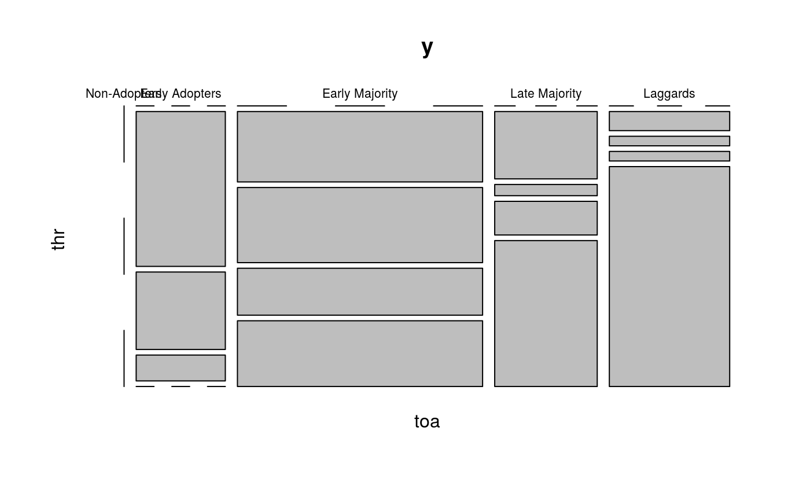

R/stats.R
classify_adopters.RdAdopters are classified as in Valente (1995). In general, this is done depending on the distance in terms of standard deviations from the mean of Time of Adoption and Threshold.
classify_adopters(...) classify(...) # S3 method for diffnet classify_adopters(graph, include_censored = FALSE, ...) # S3 method for default classify_adopters(graph, toa, t0 = NULL, t1 = NULL, expo = NULL, include_censored = FALSE, ...) # S3 method for diffnet_adopters ftable(x, as.pcent = TRUE, digits = 2, ...) # S3 method for diffnet_adopters as.data.frame(x, row.names = NULL, optional = FALSE, ...) # S3 method for diffnet_adopters plot(x, y = NULL, ftable.args = list(), table.args = list(), ...)
| ... | Further arguments passed to the method. |
|---|---|
| graph | A dynamic graph. |
| include_censored | Logical scalar, passed to |
| toa | Integer vector of length \(n\) with times of adoption. |
| t0 | |
| t1 | Integer scalar passed to |
| expo | Numeric matrix of size \(n\times T\) with network exposures. |
| x | A |
| as.pcent | Logical scalar. When |
| digits | Integer scalar. Passed to |
| row.names | Passed to |
| optional | Passed to |
| y | Ignored. |
| ftable.args | List of arguments passed to |
| table.args | List of arguments passed to |
A list of class diffnet_adopters with the following elements:
A factor vector of length \(n\) with 4 levels: "Early Adopters", "Early Majority", "Late Majority", and "Laggards"
A factor vector of length \(n\) with 4 levels: "Very Low Thresh.", "Low Thresh.", "High Thresh.", and "Very High Thresh."
Classifies (only) adopters according to time of adoption and threshold as described in Valente (1995). In particular, the categories are defined as follow:
For Time of Adoption, with toa as the vector of times of adoption:
Early Adopters: toa[i] <= mean(toa) - sd(toa),
Early Majority: mean(toa) - sd(toa) < toa[i] <= mean(toa) ,
Late Majority: mean(toa) < toa[i] <= mean(toa) + sd(toa) , and
Laggards: mean(toa) + sd(toa) < toa[i] .
For Threshold levels, with thr as the vector of threshold levels:
Very Low Thresh.: thr[i] <= mean(thr) - sd(thr),
Low Thresh.: mean(thr) - sd(thr) < thr[i] <= mean(thr) ,
High Thresh.: mean(thr) < thr[i] <= mean(thr) + sd(thr) , and
Very High. Thresh.: mean(thr) + sd(thr) < thr[i] .
By default threshold levels are not computed for left censored data. These
will have a NA value in the thr vector.
The plot method, plot.diffnet_adopters, is a wrapper for the
plot.table method. This generates a
mosaicplot plot.
Valente, T. W. (1995). "Network models of the diffusion of innovations" (2nd ed.). Cresskill N.J.: Hampton Press.
Other statistics: bass,
cumulative_adopt_count, dgr,
ego_variance, exposure,
hazard_rate, infection,
moran, struct_equiv,
threshold,
vertex_covariate_dist
# Classifying brfarmers ----------------------------------------------------- x <- brfarmersDiffNet diffnet.toa(x)[x$toa==max(x$toa, na.rm = TRUE)] <- NA out <- classify_adopters(x) # This is one way round( with(out, ftable(toa, thr, dnn=c("Time of Adoption", "Threshold")))/ nnodes(x[!is.na(x$toa)])*100, digits=2)#> Threshold Non-Adopters Very Low Thresh. Low Thresh. High Thresh. Very High Thresh. #> Time of Adoption #> Non-Adopters 28.15 0.00 0.00 0.00 0.00 #> Early Adopters 0.00 7.96 3.70 0.74 1.11 #> Early Majority 0.00 8.89 10.56 4.63 4.63 #> Late Majority 0.00 6.30 10.19 8.70 16.30 #> Laggards 0.00 1.48 1.11 2.22 11.48# This is other ftable(out)#> thr Non-Adopters Very Low Thresh. Low Thresh. High Thresh. Very High Thresh. #> toa #> Non-Adopters 21.97 0.00 0.00 0.00 0.00 #> Early Adopters 0.00 6.21 2.89 0.58 0.87 #> Early Majority 0.00 6.94 8.24 3.61 3.61 #> Late Majority 0.00 4.91 7.95 6.79 12.72 #> Laggards 0.00 1.16 0.87 1.73 8.96# Can be coerced into a data.frame, e.g. ------------------------------------# NOT RUN { View(classify(brfarmersDiffNet)) cbind(as.data.frame(classify(brfarmersDiffNet)), brfarmersDiffNet$toa) # }# Creating a mosaic plot with the medical innovations ----------------------- x <- classify(medInnovationsDiffNet) plot(x)